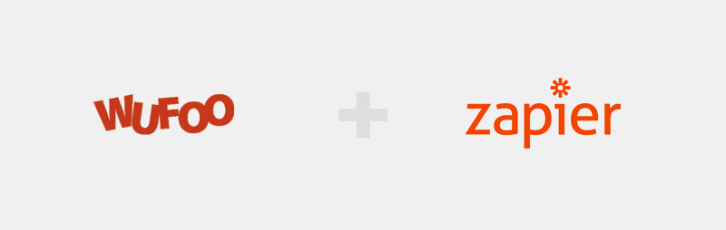

responsive design · shopify · jekyll · graphic design · content development
OESH Shoes is a women's shoe company founded by a Harvard doctor. Together, we uncovered the best narratives for the brand, including the tag line— Healthy by Design. I designed and built an all new website and shopify store which rely heavily on product photography and clear, concise messaging.
OESH are designed differently than most of their competitors, so a great deal of care was taken to illustrate what makes OESH unique. This page was completely rewritten and all new photographs were shot to craft a compelling story.
I built a custom shopify theme with the same look and feel as the primary site, allowing visitors to seamlessly navigate between the two sites.
Landing pages were redesigned in an effort to increase advertising conversions rates. Through design alone, one campaign's cost per conversion dropped by more than 80%.
responsive design · wordpress · graphic design
GreenBlue is an environmental nonprofit dedicated to the sustainable use of materials in society. The concept of sustainability is often communicated in terms that are abstract or cliché. I sought to create an experience that portrays the concrete nature of their work. Photography was used throughout the site, and the front door features a full-screen background video that conveys the seriousness of the work they pursue.
A tile grid was used throughout the site, which works well on all devices.
As a multi-author organization, WordPress is a logical and cost-effective platform of choice. I was able to leverage its custom content capabilities to quickly add new functionality as needed.
mobile-first design · jekyll · graphic design
BA21 is a design and development firm in Charlottesville, Virginia, where I am a partner. To ease maintenance and encourage development, the site is extremely simple. I leaned on the angle mockups from Meng To, and built a straightforward layout that requires no external frameworks or libraries.
I opted to use one design pattern for navigation at all resolutions, to keep the experience simple.
To further ease deployment, the site is hosted on GitHub Pages. With built-in jekyll support, updating the site is as easy as pushing changes to our repository.
responsive design · jekyll · knack.com · graphic design
CleanGredients, a project of GreenBlue, is the definitive database of green chemical ingredients. The original application was complex and increasingly costly to maintain. Ultimately our needs were very simple and we were able to re-envision the application using the cloud-based database, Knack.com.
All chemical record and user CRUD functions were easily handled by Knack, making the application management easy for anyone at any skill level. Even the complex author/editor work flow, intrinsic to CleanGredients, was easily reproduced. The simple application embed code provided a seamless experience for end-users as them moved between the website and the application.
New subscribers were able to register and pay for a subscription using Wufoo forms, which were also embedded on-site. The Stripe payment triggered a work flow in Zapier, which created the new user in Knack. All Zapier actions also triggered Slack messages, allowing us to monitor activity in real-time.
Initially, CleanGredients was a desktop-only database. With the streamlined application, users requested a mobile-friendly interface which was easily added to the flexbox-based site.
I've been building websites for (what seem like) a long time, so get in touch to see if my experience fits your needs. Contact me however you see fit- if you prefer email it's: paulgiacherio@gmail.com